Using the chat and controlling notifications
If settings allow, you can interact and engage with fellow attendees using the chat feature, with private, group and event-wide options available.#
NB: The guidance below is for conference attendees. If you are the administrator of an event please see The conference platform.
Skip to:
In order to access the chat feature, you will first need to set up your name badge when creating an account.
After logging in to the conference platform, you should also set up your notifications settings.
Click on your profile picture and then Edit notifications.
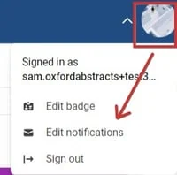
You can then make your choices.
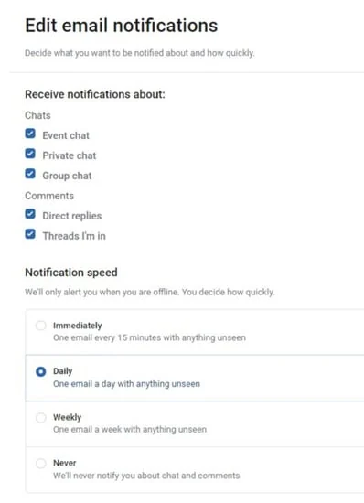
To access chat, click on the icons shown below in the top right hand corner of your screen.
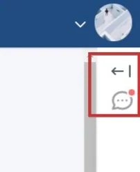
You can then choose Event or Direct (Private) or Group chat, then click the draft icon to begin creating your message.
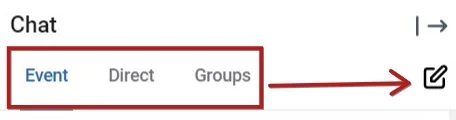
Event chat
The default option is the event chat, and is accessible to all delegates that have created a profile and name badge.
To enter the event-wide chat, simply enter your message in the field at the bottom, then click the arrow to send it.
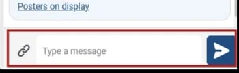
The link icon to the left of the message field allows you to attach and send event content. Simply enter your message and then click the link, then choose which type of content you would like to send.
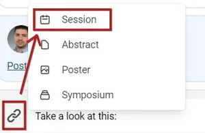
A list of the available content will be displayed, along with a list of recently viewed, and a searchable field at the bottom.
Click the relevant one, then click the arrow (as above) to send. You can attach multiple pieces of content in the same message if you wish.
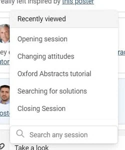
Private chat
To send a direct, private message to an attendee, click the Direct tab and then Send a private message.
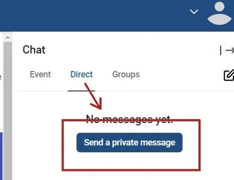
You will then have the options shown below.
1) Search for an attendee
3) Click on an attendee to start sending messages.
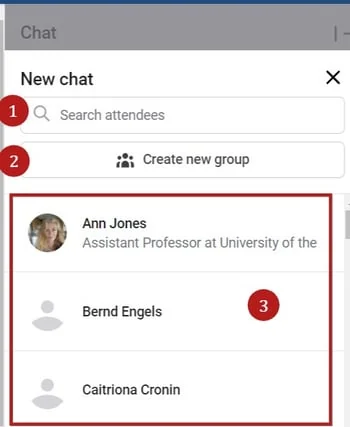
Group chat
Clicking on the group chat icon will give you three options
- An option to search groups (by title of the group)
- View and join existing groups (note - only public groups will be displayed)
- Create a new group
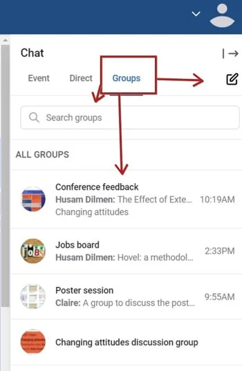
Join existing public groups
Click on your chosen group
Clicking (1) will reveal the participants in the group (and an option to add more particpants)
2) Further options (see below)
3) The group's activity
4) An option to join the group.
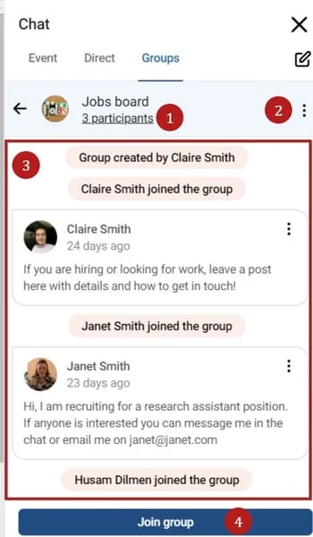
Clicking the further options will also give you options 1) and 4) as well as a Report group option.
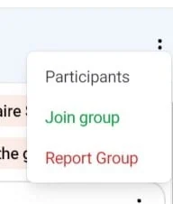
Creating a new group
Click on the pencil icon to create a new group
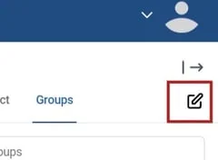
You can then
- create a name for the group
- Set to private (default is public)
- Add an icon / image for the group (optional)
Click next
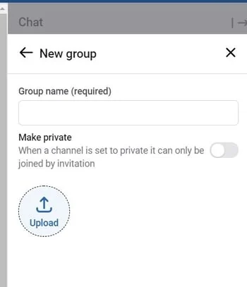
Whichever option you choose, you can then choose the participants.You can then search for a participant and / or click on their names to add them to the group.
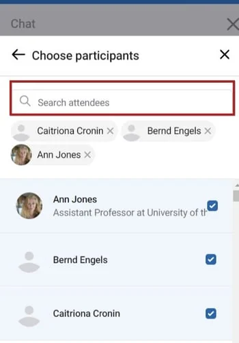
You can then view your group and start sending messages.
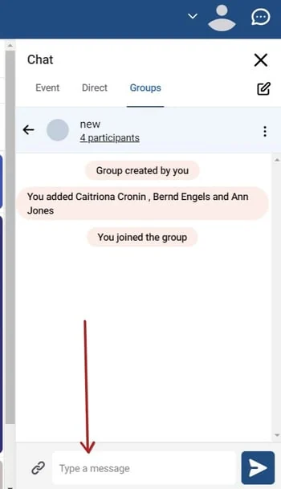
Clicking on the three dots will give you the three options shown below
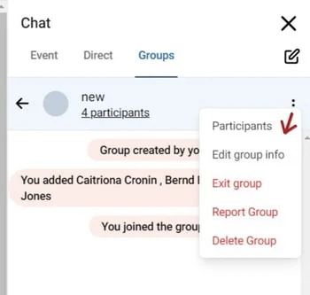
If you wish to report a group, after clicking the report group link, enter the details requested (and check the Exit group box, if you wish to do so) and click Report group .
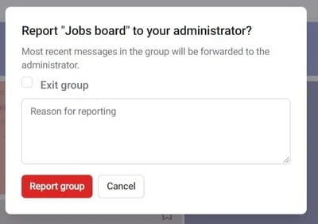
Blocking attendees in chat
NB: You can only block users in the direct, private chat option. If you block them, you will still see their activity in the group and event chat.
In the Direct chat option, click on the three dots to the right of the attendee you wish to block, and click Block user.
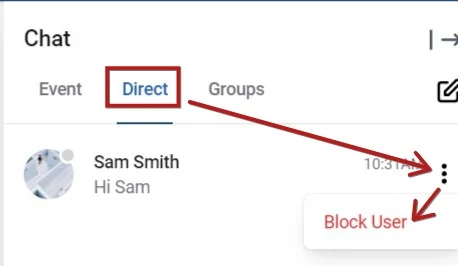
You will see a warning pop up. Click Block if you wish to continue.
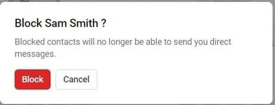
Blocked users will not receive notification that you have blocked them. You simply just won't receive any messages if they send any.
Video chat
If permissions allow, you can video chat with groups, or directly with fellow attendees.
The process is the same for both options, but in the example below, a group has been used.
Navigate to the group or individual you would like to video chat with and click the video icon
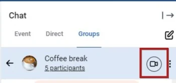
You will see a notification near the bottom of your screen.
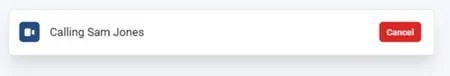
Note: if you are responding to a call, you will see the following. Click Join to accept the call. or Dismiss if you do not wish to accept the call.
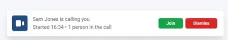
Whether you are the caller or the recipient, you will see the following.
Click Join meeting to begin chatting.
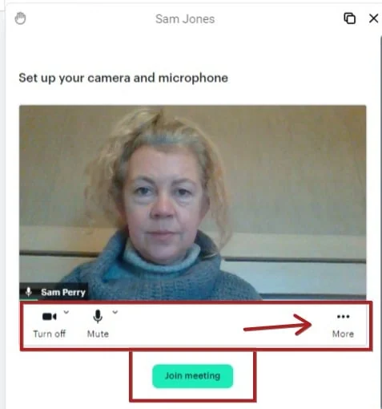
Below the screen, you will see some settings (shown above). The first two allow you to turn on / off your camera and microphone. Clicking the three dots will reveal the following, where you can
- Change the name that will appear to other callers
- Blur your background
- Hide self view
- Pin yourself, so you will always appear on the screen.
 -1.jpg?width=210&name=Screenshot%20of%20Welcome%20%E2%80%A2%20Virtual%20Conference%20(2)-1.jpg)
-1.jpg?width=210&name=Screenshot%20of%20Welcome%20%E2%80%A2%20Virtual%20Conference%20(2)-1.jpg)
Once you have clicked Join meeting, you will see the view shown below.
There are controls above and below the screen which will allow you to configure your screen to your requirements. From left to right, along the top:
- Move the video panel around the screen
- The name of the group / person you are video chatting
- Minimise /maximise screen
- Close screen (this will end the call).
 .jpg?width=475&name=Screenshot%20of%20Welcome%20%E2%80%A2%20Virtual%20Conference%20(1).jpg)
.jpg?width=475&name=Screenshot%20of%20Welcome%20%E2%80%A2%20Virtual%20Conference%20(1).jpg)
The next row of icons, from left to right
- Settings (see below)
- The number of people on the call
- Adjust view - speaker / grid view
.jpg?width=475&name=Screenshot%20of%20Welcome%20%E2%80%A2%20Virtual%20Conference%20(2).jpg)
Settings
Clicking the cog icon will reveal the following. There are three tabs
- Audio & video: Adjust your camera, microphone and speakers
- Video quality: Change the resolution.
- Language: Set the language for the text that appears on the video module only - not the rest of the program.
 .jpg?width=477&name=Screenshot%20of%20Welcome%20%E2%80%A2%20Virtual%20Conference%20(3).jpg)
.jpg?width=477&name=Screenshot%20of%20Welcome%20%E2%80%A2%20Virtual%20Conference%20(3).jpg)
The row of icons below the screen, will allow you to (from left to right):
- Turn off your camera, mute your microphone
- View the people in the conversation
- Share your screen
- Leave the meeting.
-1.jpg?width=475&name=Screenshot%20of%20Welcome%20%E2%80%A2%20Virtual%20Conference%20(3)-1.jpg)
All activity will be recorded in the Chat panel to the right of your screen. This is useful if you have been away from your screen, or logged off and would like to see updates.
If there are any of your groups' video chats taking place, you will see a Join button which will allow you to join the call.
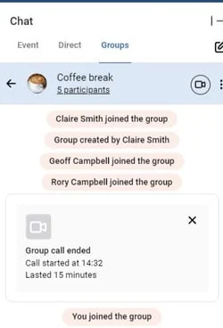
Did this page solve it?
Thanks — this helps us fix it.